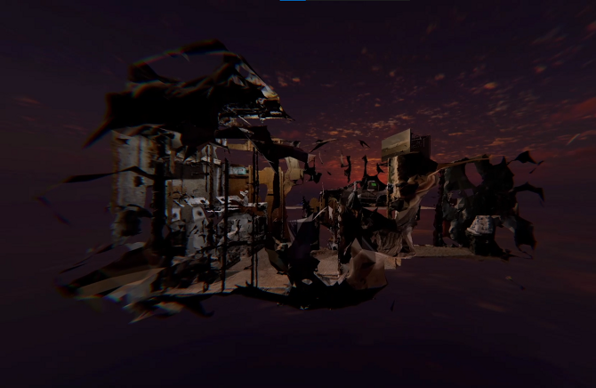
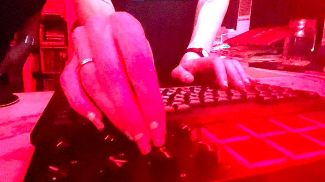
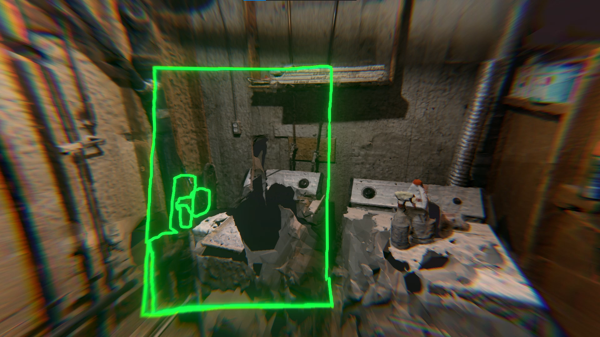
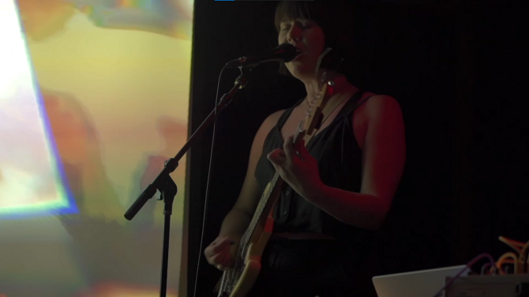
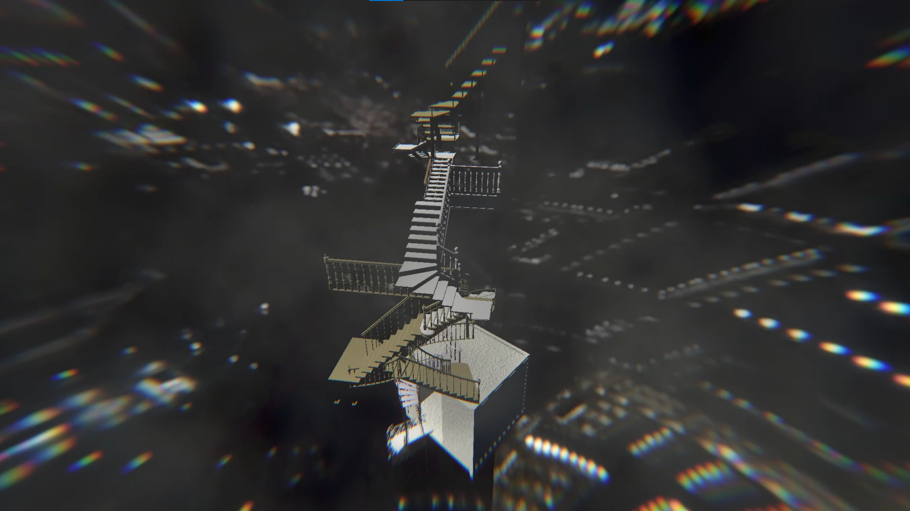
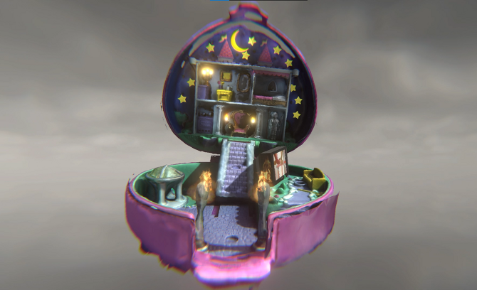
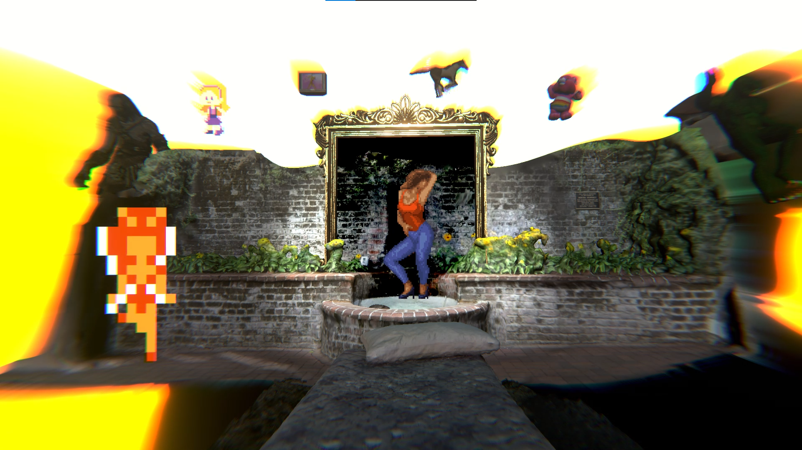
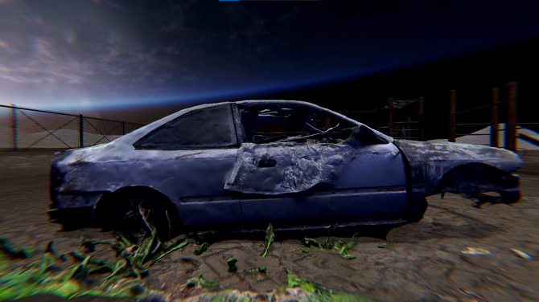
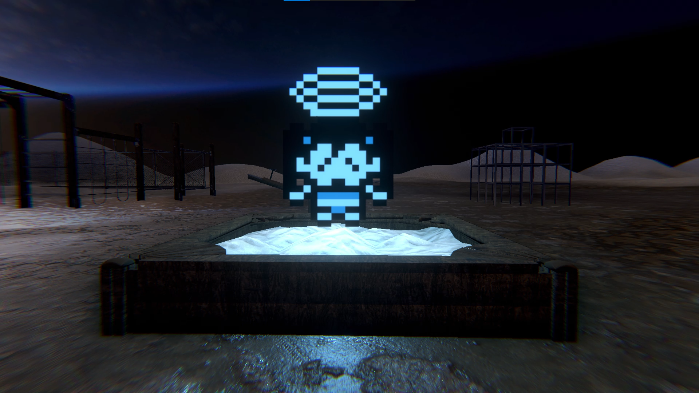
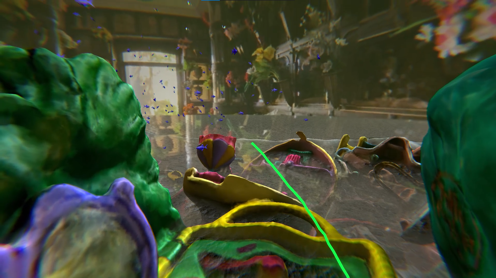

Memory as a Rock Out of Reach
Memory as a Rock Out of Reach is a hybrid videogame and musical performance by Erika M. Anderson (EMA) and visual artist Tabitha Nikolai. Amidst a melodic power-drone soundscape of modular synth, guitar, songs and spoken word, Anderson returns to the stage as a storyteller. Memory scrapes at the contours of what defined her childhood femininity within 1980s media culture: bikini babes, Saturday morning cartoons, and the eroticized overlap between them. Wielding videogame technologies originally designed for making AAA games, Nikolai subverts them into the creation of surreal psycho-geographies. Together Anderson and Nikolai play off each other, exploring sonic and visual dreamscapes projected in realtime. Synth noise, commercial detritus and degraded 3d scans evoke a haunted feeling of memory and decay. The resulting genre defying duet is at once humorous, disquieting, and hopeful. Memory as a Rock Out of Reach is a lush collage of ‘80s excess and the resulting ruination that seeks a path away from the limits of binaries and American individualism.









